마케팅은 깔때기 하나로 이해돼요
아무리 잘 만든 앱이라도 알리지 않으면 세상에 있는 줄도 몰라요. 조코딩은 그래서 만든 사람도 마케팅의 기본은 알아야 한다고 말해요. 그리고 그 기본은 생각보다 단순해서, 깔때기 하나만 이해하면 된다고 해요.
깔때기 입구로 고객이 들어와요. 중간에 새어 나가는 사람을 줄이고 끝까지 내려보내는 게 마케팅이에요. 이 깔때기를 단계로 나눈 게 AARRR(Acquisition, Activation, Retention, Revenue, Referral)이에요. 아래 슬라이드처럼 위에서부터 획득, 활성, 유지, 수익, 추천 다섯 칸이 점점 좁아져요.
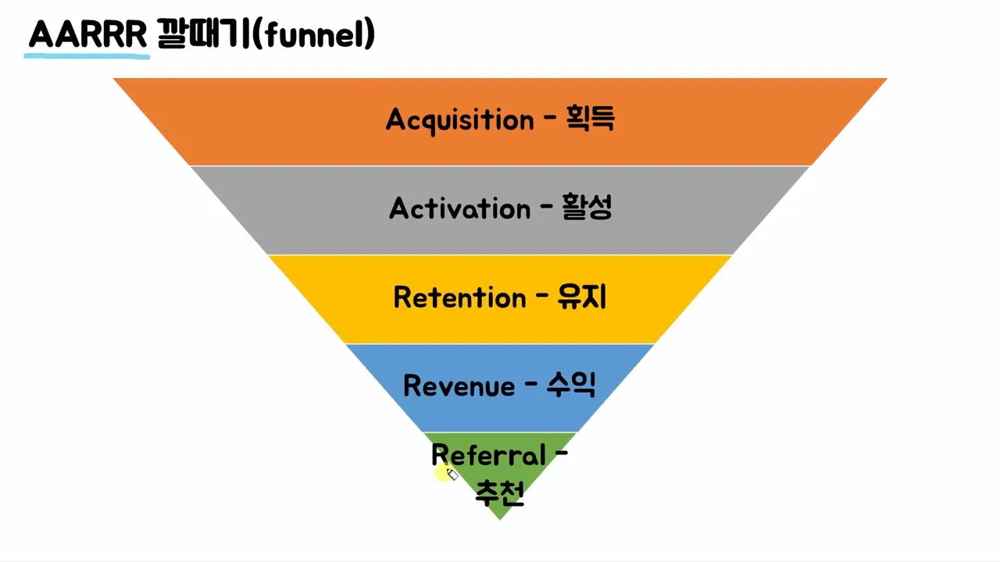
영어 이름이 낯설면 앱 기준으로 바꿔 읽으면 돼요. 알게 됨 → 다운로드 → 유저 → 현질 → 추천이에요. 다음 슬라이드는 여기에 숫자를 넣었어요. 오른쪽이 단계별 인원, 왼쪽 파란 화살표가 다음 칸으로 넘어가는 비율이에요.
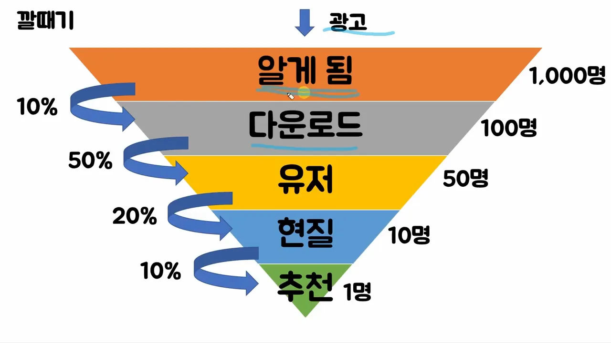
광고를 보고 앱을 알게 된 사람이 전부 내려받지는 않아요. 내려받은 사람이 다 꾸준히 쓰지도 않고요. 이렇게 다음 단계로 못 넘어가는 걸 이탈이라고 불러요. 다만 이 순서는 조코딩이 예로 잡은 거예요. 내려받기 전에 추천할 수도 있고, 돈을 안 쓴 유저도 추천할 수 있어요.
그래서 마케팅이 하는 일은 두 가지로 정리돼요. 입구로 들어오는 사람을 늘리는 것, 그리고 단계마다 전환율을 올리는 것이에요. 아래에서 영상의 숫자를 직접 바꿔 보면 두 가지가 어떻게 같은 결과를 내는지 보여요.
현질하는 사람 10명
추천하는 사람 1명
알게 된 사람 중 현질까지 가는 비율 1%
처음 값은 영상 02:20의 예시(1,000명, 10%·50%·20%·10%)예요. 막대 길이는 맨 위 칸 대비 비율이에요.
- 다운로드 비율만 10%에서 20%로 올려 보세요. 그 아래 모든 칸의 인원이 함께 두 배가 돼요.
- 다시 10%로 내리고, 알게 된 사람을 2,000명으로 늘려 보세요. 결과가 1번과 같아요. 입구를 넓히는 광고와 전환율을 높이는 앱 개선이 같은 효과를 내요.
- 현질 비율을 5%로 내려 보세요. 광고로 사람을 아무리 모아도 돈을 쓰는 사람이 적으면 광고비를 못 건져요.
전환율이 높고 이탈이 적은 앱이라면, 광고로 들어온 사람들이 벌어다 주는 돈이 광고비보다 커요. 그러면 광고를 계속할수록 이득이에요. 추천하는 사람이 충분히 많아지면 광고를 끊어도 사람이 계속 들어오는 구조가 돼요. 다음 섹션의 동물상 테스트가 바로 그런 경우예요.
동물상 테스트는 이렇게 알렸어요
동물상 테스트는 얼굴 사진을 올리면 어떤 동물을 닮았는지 알려 주는 서비스예요. 아래 화면 왼쪽이 사진을 올리는 웹 페이지, 오른쪽이 구글 플레이와 앱스토어에 올린 앱이에요.
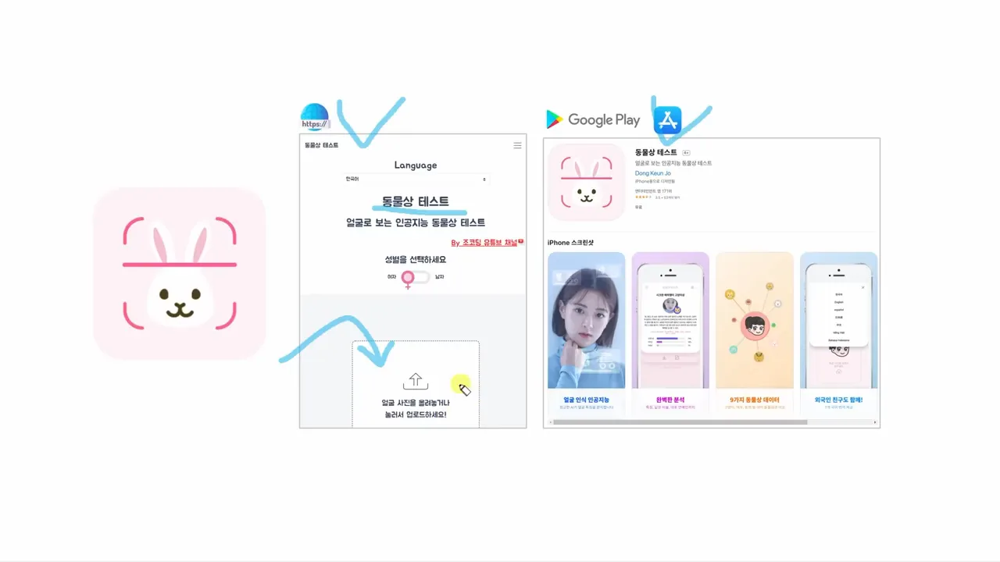
조코딩의 계산은 이랬어요. 내 결과를 남에게 보여 주고 싶은 서비스이니, 초반에 광고로 사람을 많이 모으면 공유가 공유를 불러 바이럴이 날 거라고 봤어요. 그래서 광고를 초반 한 달에 몰아서 했어요. 방법은 세 갈래였어요.
| 방법 | 어디서 | 한 일 |
|---|---|---|
| 인플루언서 마케팅 | 유튜브, 페이스북, 인스타그램 | 10대·20대 초반이 많이 보는 사람에게 홍보를 맡겼어요 |
| 퍼포먼스 마케팅 | 틱톡, 구글 애즈 | 대상과 광고 소재를 바꿔 가며 싸고 잘 먹히는 광고를 찾았어요 |
| 무료 홍보 | 자기 유튜브, 단톡방, 커뮤니티 | 강의와 게시물, 단톡방 공유로 알렸어요 |
인플루언서 마케팅
주 사용자가 중고등학생과 20대 초반이라, 그 나이대가 많이 보는 사람을 골랐어요. 화면 왼쪽 위가 유튜버 김진우 님에게 맡긴 브랜디드 콘텐츠예요. 조회수 21만 회가 찍혀 있어요. 그 아래는 페이스북 대학교 대나무숲 홍보 글이고, 오른쪽 목록은 연락한 인스타그램 셀럽 계정들이에요.
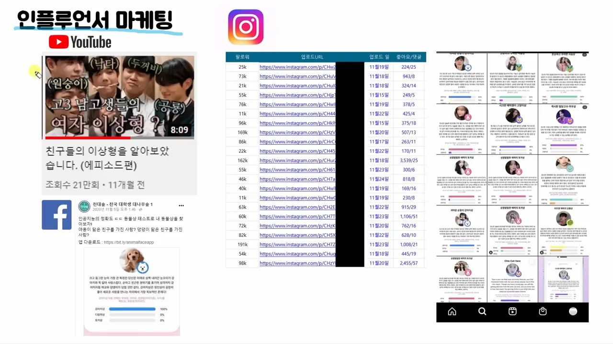
퍼포먼스 마케팅
퍼포먼스 마케팅은 대상 국가나 연령, 문구나 영상 같은 소재를 바꿔 가며 실험해서 가장 싸고 전환율 높은 광고를 찾는 방식이에요. 화면 왼쪽 휴대폰 속 영상이 실제로 쓴 광고 소재예요. 인스타그램 셀럽에게서 받은 사진과 결과로 만들었어요. 오른쪽은 틱톡 광고 관리 화면이에요.
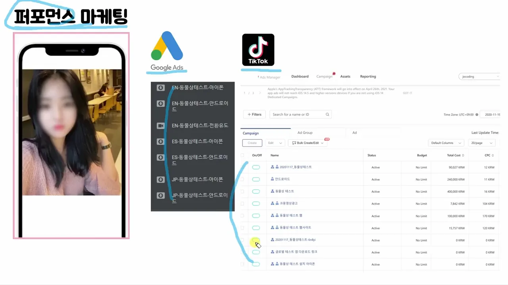
무료 홍보
광고가 꼭 돈을 내야 하는 건 아니에요. 조코딩은 자기 유튜브에서 강의를 하고 커뮤니티 게시물을 올렸어요. 속한 단톡방에도 뿌리고, 온라인 커뮤니티에 글도 썼어요. 화면의 세 아이콘이 그 세 곳이에요.
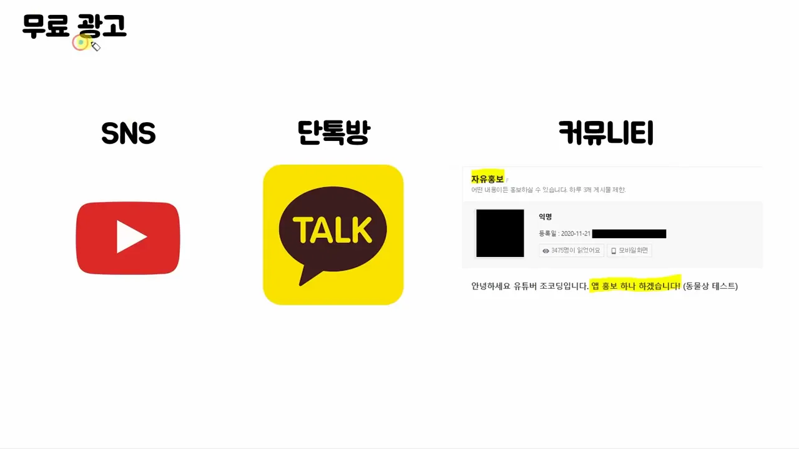
결과: 실검 1위, 앱스토어 7위
한 달쯤 이렇게 하자 결과가 나왔어요. 화면 위 가운데가 2020년 12월 17일 네이버 급상승 검색어(20대 설정) 1위, 오른쪽이 아이폰 앱스토어 엔터테인먼트 인기 차트 7위예요. 바로 아래에 카카오페이지(8위)와 아프리카TV(9위)가 보여요.
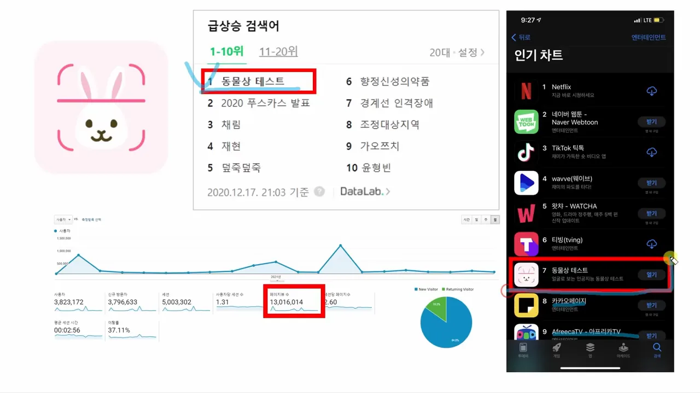
더 중요한 건 그다음이에요. 광고를 끈 뒤에도 사람들이 결과를 계속 공유했어요. 아래 화면은 트위터에서 동물상 테스트를 검색한 결과예요. 한국어 말고 포르투갈어, 영어 게시물도 섞여 있어요.
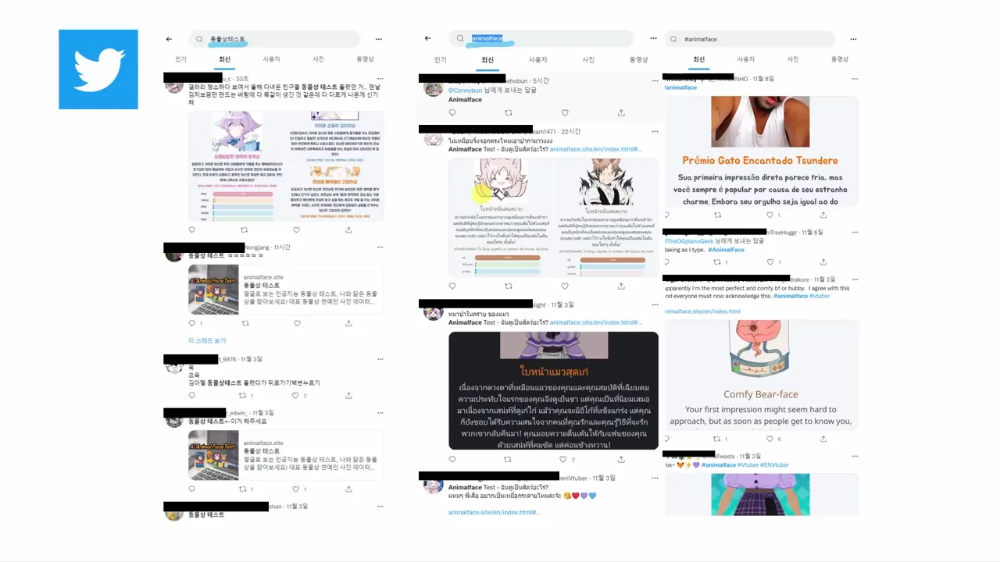
그래서 광고를 안 한 지 1년 가까이 됐는데도 사람이 들어와요. 왼쪽 구글 애널리틱스 화면에서 최근 7일 사용자가 6.5만 명이에요. 오른쪽 아래 국가 막대는 한국, 브라질, 미국, 멕시코, 태국 순이에요. 오른쪽 파란 상자는 광고 수익으로, 최근 7일이 173.65달러예요.
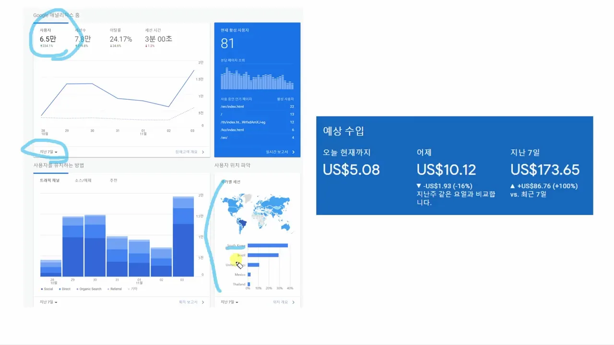
광고에서 다운로드까지, 무엇을 바꿔 볼까요
모든 방법을 한 번에 다루면 너무 많아서, 이번 영상은 구글 애즈 하나만 다뤄요. 아래 슬라이드에서 색이 남아 있는 위 두 칸, '알게 됨 → 다운로드'가 이번에 늘릴 구간이에요. 나머지 세 칸은 회색으로 빠져 있어요.
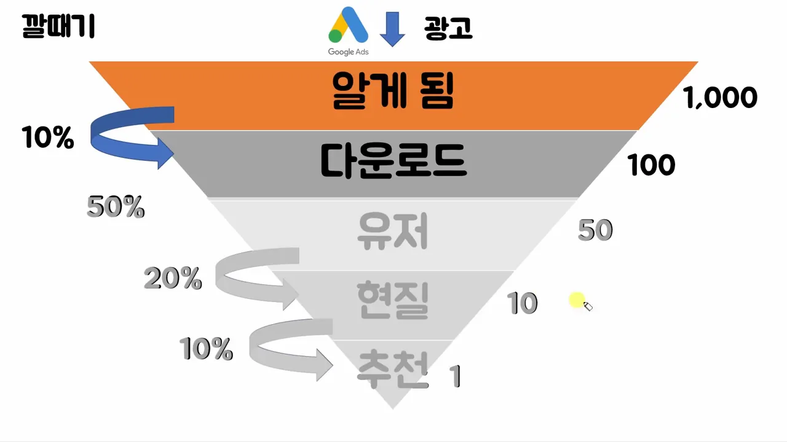
조코딩은 여기서 한 가지를 분명히 해 둬요. 게임이 재미없어서 아무도 계속 안 하고, 현질이나 광고로 돈을 벌 구조도 없다면 위 두 칸을 아무리 키워도 소용없어요. 추천으로 돌아오는 사람이 없으니 광고비만 써요. 회색 칸들을 먼저 잘 설계한 뒤에 광고를 해야 효과가 커요.
광고 → 상세 페이지 → 다운로드
유튜브를 보다가, 구글 검색을 하다가, 다른 게임을 하다가 뜨는 앱 광고도 대부분 구글 애즈로 건 거예요. 광고를 보고 바로 받는 사람도 있지만, 보통은 '자세히 알아보기'로 앱 상세 페이지를 본 뒤 받을지 말지 정해요. 아래 슬라이드가 그 흐름이에요. 그림 아래 작은 글씨가 단계마다 바꿔 볼 수 있는 것들이에요.
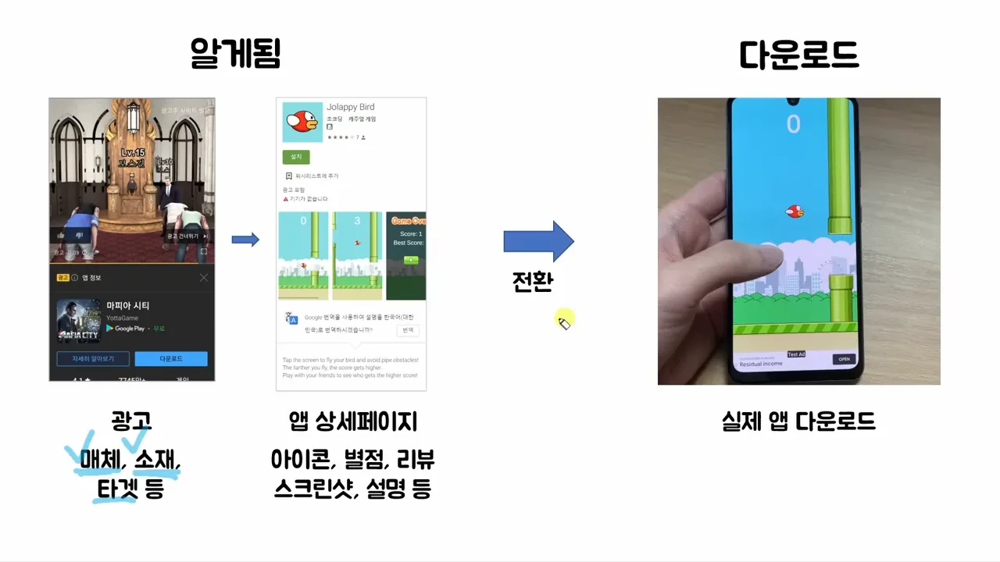
| 바꿔 볼 것 | 예시 | 왜 중요한가요 |
|---|---|---|
| 매체 | 유튜브에 걸지, 틱톡에 걸지 | 매체에 따라 광고비와 전환율이 크게 달라요 |
| 광고 소재 | 영상, 글, 이미지 | '재밌겠다'는 느낌을 주면 전환이 잘돼요 |
| 타깃 | 국가, 연령대, 관심사 | 게임에 관심 있는 사람에게 게임 광고를 보이면 더 싸고 잘 먹혀요 |
| 상세 페이지 | 아이콘, 별점, 리뷰, 스크린샷, 설명 | 광고를 누른 사람이 실제로 설치할지 여기서 정해요 |
가설을 세우고 실험해요
무엇을 바꿀지는 감으로 정할 수도 있어요. 하지만 가설 → 실험 → 데이터 확인을 거치면 더 정확해요. 아래 슬라이드의 예가 '아이콘이 빨간색이면 전환이 더 잘될까?'예요. 아이콘을 바꾸고 전환 이벤트를 추적한 뒤, 왼쪽 아래 숫자처럼 전과 후를 비교해요. 1,000명 중 5명에서 20명으로 늘었다면 가설이 맞은 거예요.
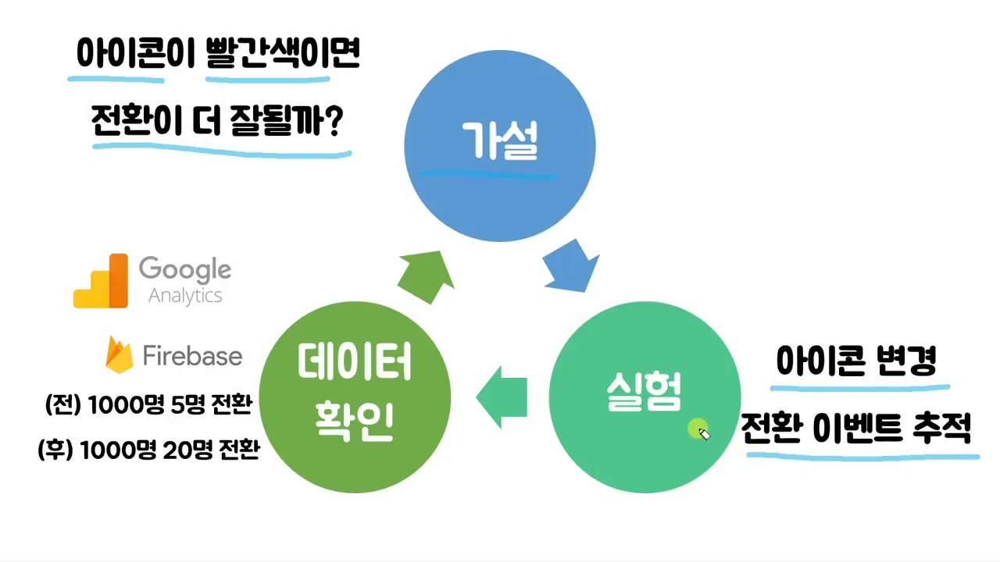
다운로드만 볼 때는 구글 애즈가 전환을 알아서 세요. 앱 안에서 회원가입을 몇 명이 하는지, 게임의 '다시 하기' 버튼을 몇 번 누르는지까지 보려면 따로 도구가 필요해요. 웹사이트는 구글 애널리틱스, 앱은 파이어베이스 같은 이벤트 추적 도구를 쓰면 버튼 하나하나의 클릭까지 볼 수 있어요.
구글 애즈 준비: 쿠폰과 계정 연결
여기서부터는 실습이에요. 구글에서 '구글 애즈'를 검색해 첫 번째 광고 페이지로 들어가면, 아래쪽에 프로모션 안내가 있었어요. 화면에서 빨간 줄을 그은 문장이 '최대 100,000원까지 사용하신 금액만큼 프로모션 크레딧을 적립해 드립니다'예요.
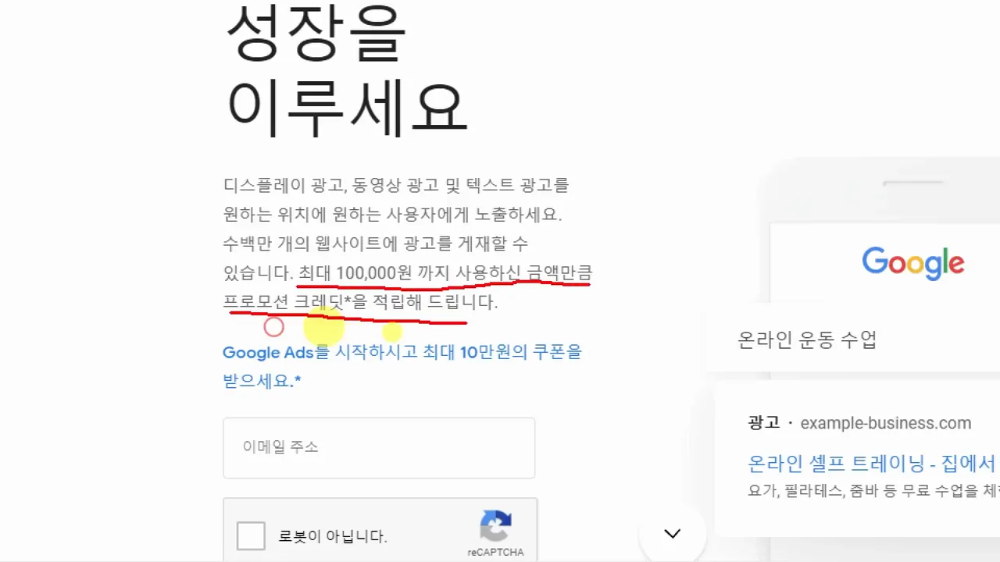
- 이메일 주소를 넣고 '쿠폰 코드를 받으세요'를 눌러요 — 메일로 광고 크레딧 쿠폰 번호가 와요.
- 구글 애즈에 들어가 도구 및 설정 → 결제 → 프로모션으로 가요
- 플러스 버튼을 눌러 메일로 받은 코드를 넣고 제출해요 쿠폰이 적용돼서 쓴 광고비만큼 크레딧을 돌려받을 수 있게 돼요
구글 플레이 계정 연결
다음은 구글 플레이 개발자 계정과 구글 애즈 계정을 잇는 일이에요. 도구 및 설정 → 연결된 계정으로 가면 아래 화면이 나와요. 맨 위 목록에 Google Analytics(GA4(Google Analytics 4)) & Firebase, Google Analytics(UA(Universal Analytics)), Google Play, Search Console, YouTube가 보여요.
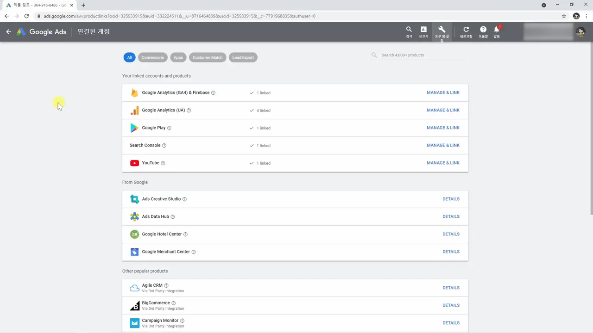
두 갈래로 쓸모가 있어요. 구글 플레이를 이으면 내 개발자 계정으로 낸 앱이 광고로 몇 번 설치됐는지 셀 수 있어요. 파이어베이스나 구글 애널리틱스를 이으면 광고를 보고 들어온 사람이 앱 안에서 무슨 행동을 했는지까지 추적할 수 있어요. 영상에서는 구글 플레이만 연결해요.
앱 캠페인 만들기
이제 광고를 거는 단위인 캠페인을 만들어요. 아래 그림은 이 섹션과 다음 섹션에서 채울 칸을 한데 모은 거예요. 캠페인에서는 누구에게 얼마를 쓸지를 정하고, 그 안의 광고 그룹에는 실제로 보여 줄 문구와 이미지를 넣어요.
목표와 유형 고르기
구글 애즈 왼쪽 메뉴에서 앱 캠페인을 고르고, 플러스 모양의 새 캠페인 버튼을 눌러요. 첫 화면에서 캠페인 목표를 골라요. 판매, 리드, 웹사이트 트래픽 같은 여덟 칸 중 아래 줄 두 번째 '앱 프로모션'이에요.
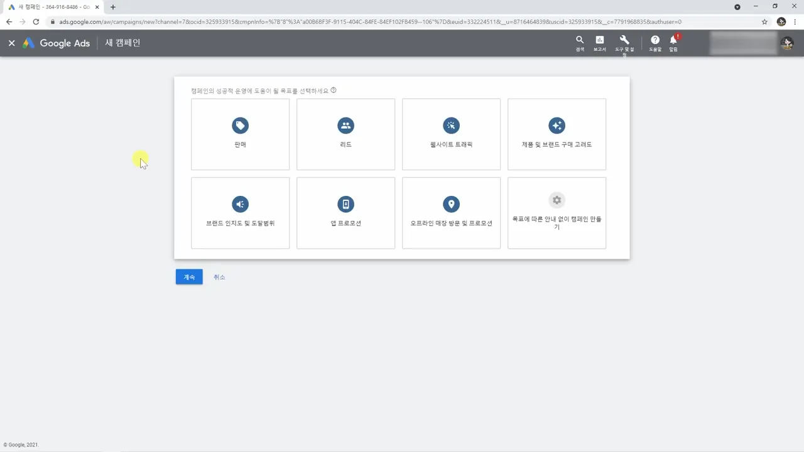
목표를 고르면 캠페인 유형은 '앱'으로 자동 선택돼요. 그 아래 하위 유형은 세 가지예요. 신규 사용자 설치를 늘리는 앱 설치, 기존 사용자의 행동을 늘리는 앱 참여, 출시 전 사전 등록이에요. 설치를 늘리는 게 목적이니 '앱 설치'를 골라요.
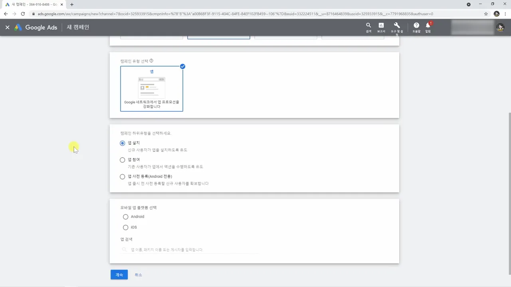
예시 앱은 이전 영상에서 만들어 구글 플레이에 낸 게임 Jolappy Bird예요. 앱을 고르고 계속을 누른 뒤 캠페인 이름을 정해요.
위치와 언어
영어로 만든 글로벌 게임이라 위치는 '모든 국가 및 지역', 언어는 영어로 정했어요. 영어를 쓰는 사람 모두에게 광고가 가요. 한국어 앱이라면 대한민국만, 다른 언어 앱이라면 그 나라만 고르는 게 맞아요. 앱의 언어와 광고 대상이 맞아야 광고가 먹혀요.
입찰: 설치 한 건에 얼마까지 쓸까요
입찰은 광고에 쓸 돈을 정하는 칸이에요. 여기서는 '타겟 설치당비용', 곧 설치 한 건을 얻는 데 얼마까지 쓸지를 넣어요. 아래 화면 가운데 파란 안내 상자에 '이 앱과 동일한 카테고리에 있는 다른 앱의 일반적인 설치당비용은 ₩180입니다'라고 나와요.
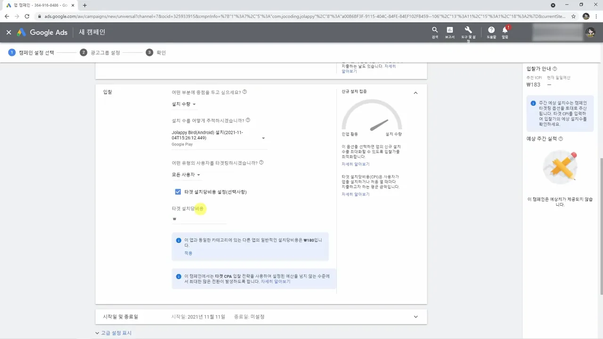
같은 화면 위쪽 '설치 수를 어떻게 추적하시겠습니까?' 칸도 중요해요. 광고가 다운로드로 얼마나 이어졌는지 세려면 전환 이벤트를 골라야 해요. 앞에서 계정을 연결해 뒀다면 'Jolappy Bird(Android) 설치' 이벤트가 이미 만들어져 있어서 그걸 고르면 돼요.
예산과 기간
하루 예산은 설치당 목표 비용을 기준으로 잡아요. 영상에서는 구글이 최소 50배, 권장 100배 이상을 권한다고 말해요. 그래서 180원 × 100 = 18,000원을 넣었어요. 아래 화면 맨 위 예산 칸의 '₩18,000'과 오른쪽 입찰가 안내의 '₩180 · ₩1.8만'이 그 결과예요.
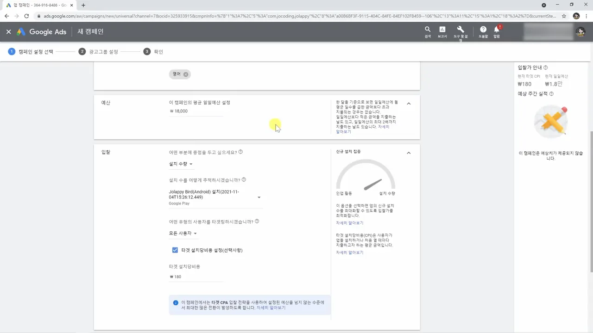
시작일과 종료일은 원하는 날짜로 정해요. 영상에서는 종료일을 '없음'으로 뒀어요. 언제든 직접 멈출 수 있으니, 돌려 보다가 효과를 보고 판단하면 돼요. 다 채웠으면 '저장하고 계속하기'를 눌러요.
광고 그룹: 문구와 이미지는 많을수록 좋아요
캠페인 안에는 광고 그룹이 들어가요. 광고 그룹에는 광고에 쓸 제목, 설명, 이미지, 동영상, HTML5(HyperText Markup Language 5)를 등록해요. 글을 하나 넣을 때마다 화면 오른쪽 미리보기의 광고 모양이 바뀌어요. 그룹 이름은 'Jolappy Bird 광고 그룹 1'처럼 정하면 돼요.
이미지는 권장 크기에 맞추면 광고가 더 잘 나가요. '자세히 알아보기'를 누르면 오른쪽에 도움말이 열려요. 이미지 칸의 표가 비율별 최소 크기와 권장 크기예요.
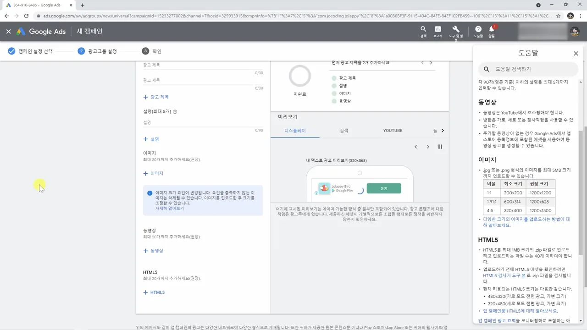
| 비율 | 최소 크기 | 권장 크기 |
|---|---|---|
| 1:1 | 200×200 | 1200×1200 |
| 1.91:1 | 600×314 | 1200×628 |
| 4:5 | 320×400 | 1200×1500 |
왜 많이 넣을수록 좋을까요
구글 애즈는 등록된 제목, 설명, 이미지, 영상을 여러 개로 조합해서 시험해요. 그중 효과가 좋을 것 같은 조합을 골라 내보내요. 사람이 하나하나 실험하지 않아도 나열만 해 두면 알아서 조합하고 실험한다는 거예요. 그래서 소재를 많이 넣을수록 유리해요.
아래 화면 왼쪽이 처음에 넣은 한국어 문구들이에요. 제목 다섯 개, 설명 다섯 개, 이미지 세 장이에요. 가운데 '광고 효력' 원 아래에 '미흡'이 떠 있고, 체크 목록에서 동영상만 비어 있어요.
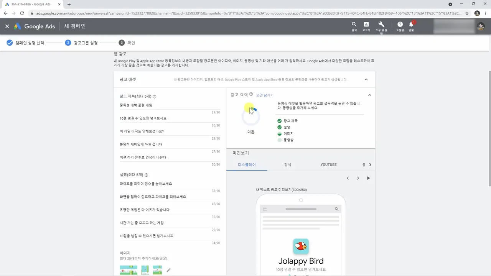
이렇게 넣은 광고는 디스플레이, 검색, 유튜브, 둘러보기, 구글 플레이까지 여러 자리에 나가요. 저장하고 계속하기를 누르면 구글 애즈가 머신 러닝으로 소재를 조합해, 설치 비용은 낮추고 전환율은 높이는 쪽으로 광고를 돌려요.
성과 확인하고 고치기
광고를 하루쯤 돌린 결과예요. 캠페인을 누르고 '개요'로 들어가면 아래 화면이 나와요. 위쪽 네 칸이 클릭수 480, 노출수 1.52만, 설치(Jolappy Bird(Android)) 102.00, 비용/설치 ₩177이에요.
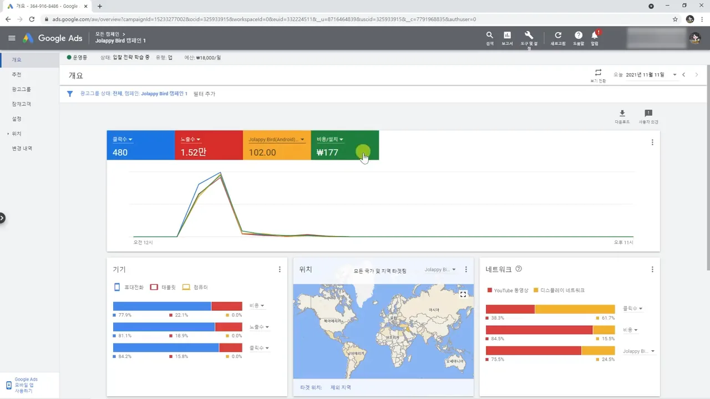
숫자를 깔때기 순서로 늘어놓으면 이래요. 노출에서 클릭으로, 클릭에서 설치로 갈수록 사람이 줄어드는 게 첫 섹션의 깔때기 그대로예요.
| 지표 | 값 | 뜻 |
|---|---|---|
| 비용 | 1.8만 원 | 하루 예산 18,000원을 그대로 썼어요 |
| 노출수 | 1.52만 회 | 광고가 화면에 뜬 횟수예요 |
| 클릭수 | 480회 | 그중 광고를 누른 횟수예요 |
| 설치 | 102건 | 누른 사람 중 실제로 설치한 수예요 |
| 설치당 비용 | 177원 | 목표 180원보다 조금 싸게 설치를 얻었어요 |
| 클릭률(CTR(Click-Through Rate)) | 3.15% | 노출 대비 클릭 비율이에요. 23:01 화면에서 지표를 바꿔 보여 줘요 |
기기, 국가, 네트워크별로 쪼개 보기
개요 아래쪽 카드에서는 같은 숫자를 여러 기준으로 쪼개 봐요. 기기별로 휴대전화와 태블릿에 비용과 노출이 얼마나 갔는지, 국가별로 어디서 설치와 클릭이 많았는지, 요일·시간별로도 볼 수 있어요. 네트워크 카드의 물음표를 누르면 아래 설명이 떠요.
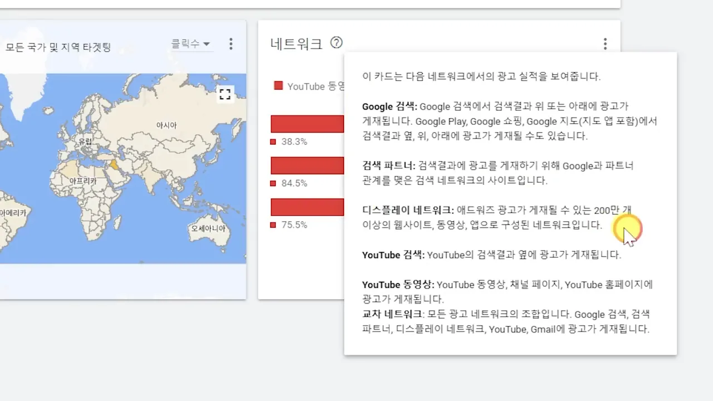
어떤 문구와 이미지가 먹혔나요
광고 그룹 → 광고 애셋으로 들어가면 소재 하나하나의 성적이 나와요. 아래 화면에서 맨 위 가로형 이미지(1200×628)가 클릭 85회, 클릭률 3.41%, 노출 2,490회로 거의 혼자 성과를 냈어요. 세로형과 정사각형 이미지는 노출이 몇 번 안 됐어요.
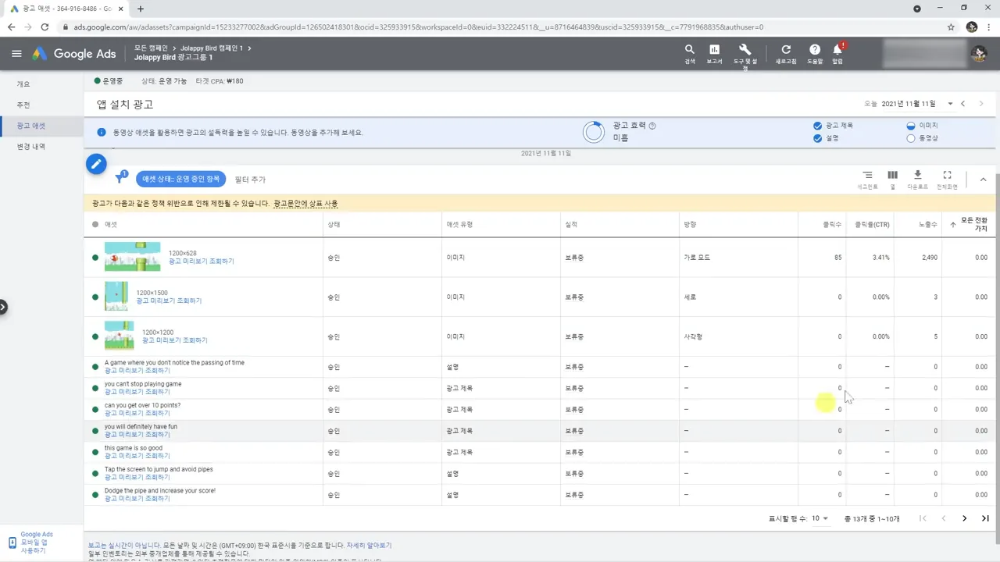
이 표를 보고 잘 된 쪽의 이미지나 문구를 더 넣으면 광고 효율이 올라가요. 그리고 다시 결과를 보고 고치는 걸 반복해요. 앞에서 본 가설 → 실험 → 데이터 확인의 고리를 광고 소재에 그대로 돌리는 셈이에요.
광고 멈추기
광고를 멈추려면 캠페인으로 들어가 왼쪽 위 초록 점이 찍힌 '운영중'을 눌러 '일시중지'로 바꿔요. 아래 화면이 그 버튼을 누르기 직전이에요. 옆에 '상태: 입찰 전략 학습 중', '예산: ₩18,000/일'도 보여요.
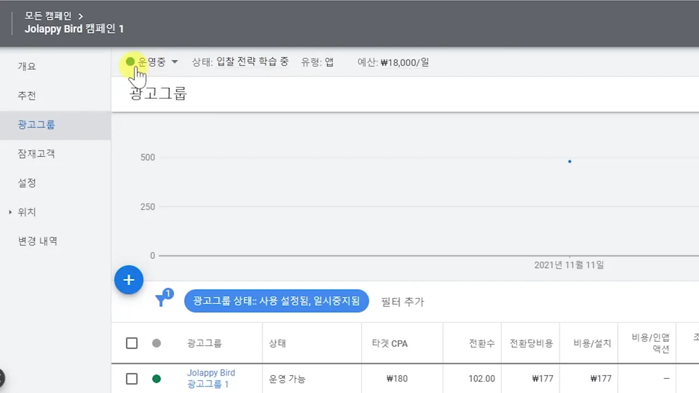